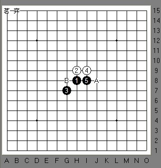
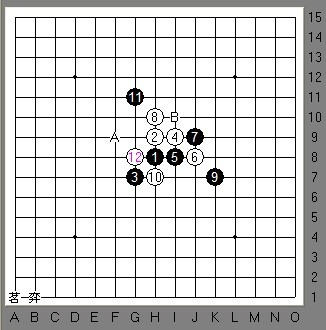
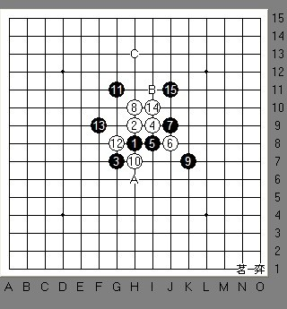
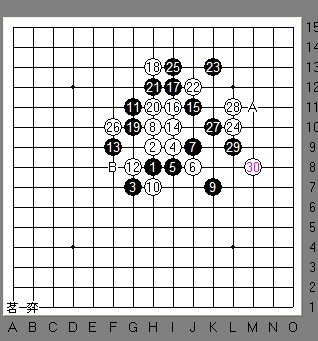
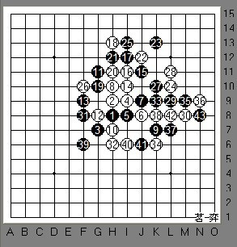
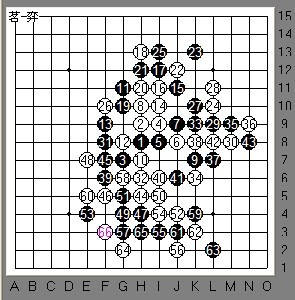
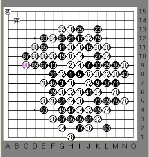

2009茗弈家族赛的一局
#1 2009茗弈家族赛的一局作者：茗弈小刀 发表时间：2009-12-29 16:18:11
又是一年了，家族也需要总结一下。12月19号开始家族举办年底比赛交流，下面我挑了颇具代表性的一盘与大家分享下，欢迎各路朋友建议指正。本局为丘转斜常见的三打，少欺负我VS蝶舞红枫：

6在A点为最强防，有的朋友喜欢下在B点，感觉稍弱。

8手强，但也具有欺骗性，如9防反了白杀，杀点为K10。10手个人感觉还是先冲四再占这个点最佳，因为冲了后感觉白的发展空间大，而且不冲这个点黑就占了，现在感觉整个形式还是在黑的控制内。
12团角做2个活2，具体发展方向尚不太明朗。如图，此时黑档两边均可，右边反活2，虽然稍微积极些，但目前白暂时有先手，所以这里选手分析白左边的活2攻击强些，有2，4这个眠2可以利用，发展空间也大些，故这手果断的封住了左边。我们下棋有的时候需要判断准确，懂得舍得。

如上图，白利用另一个活2进攻，黑控制后，14手这里大概有这么3个地方可战较好。由于上边黑的控制很严实，白难出棋，A点可谓转身别寻他路;C点飘出去，搅乱黑上边外势，15应H11,这个有点类似瑞常见那个13，14变化的下法;B点最为稳妥的一手，防守也带进攻。

接下来双方交换后激烈拼杀相互限制，并争夺先手权。到30手局面进一步定型，先手还是掌握在黑手中，双方优势都不太明显，黑此时可以在右边反活2，限制中发展，也可以不理会直接进攻，那么很显然主战场在下边。选手经过冷静分析，白右上没什么棋，毅然落在B处。

31活2主动拉动下边局势，32档后与6.24形成连接。33，35防守中进攻。39做2个眠三加强自己局部子力的厚度。40活三，至43交换结束。黑的优势在左下，白的优势在中下。44手比较关键了。

44做杀，与12，2，14眠三取得联系，并以2个眠三，拉开向下进攻的势头。妙招！逼迫45冲了那个4，进一步奠定了自己下边的优势。47跟防，48腾出时间来压缩黑左边的空间。49没有去盲目进攻，而是反过来压缩白的空间，也是很沉着的一手。接下来又继续交换，消磨了下边的空间。双方的思维都非常严密，没给对手留任何机会和幻想。

现在左上还有一点空间，但彼此都没有机会。到90手和棋。
这盘棋值得学习的地方是，双方在防守中都有进攻，在进攻中都带有防守，也就是说把进攻与防守结合得比较完美。还有一点是大局观也很不错。这盘棋我觉得在这次比赛中算很精彩的一盘了，希望大家看后提出意见和分析，以此共勉。
［ 五子痴 于 2009-12-29 16:21:29 时奖励此帖[金币加 20 威望加1］
［ 慎独 于 2009-12-29 16:30:01 时花20金币送鲜花一朵］
［ 梦醉南天 于 2009-12-29 17:23:07 时花20金币送鲜花一朵］
［ 啊呆 于 2009-12-30 13:38:51 时花20金币送鲜花一朵］
［ 行云流水 于 2010-1-4 13:15:28 时奖励此帖[金币加 20 威望加1］
#2 Re:2009茗弈家族赛的一局作者：举步回眸浅浅笑 发表时间：2009-12-29 16:22:24
 恩,事后少欺负说,比赛的分真不容易啊
恩,事后少欺负说,比赛的分真不容易啊#3 Re:2009茗弈家族赛的一局作者：慎独 发表时间：2009-12-29 16:30:45
支持一个。。。。。。。#4 Re:2009茗弈家族赛的一局作者：岑小鱼 发表时间：2009-12-29 16:41:40
黑方几次都是选择激烈的对抗 强悍啊#5 Re:2009茗弈家族赛的一局作者：怪 发表时间：2009-12-29 18:20:43
太强了！
求少欺负大师靓照！
#6 Re:2009茗弈家族赛的一局作者：gigiqi 发表时间：2009-12-29 20:07:52
支持
#7 Re:2009茗弈家族赛的一局作者：闫荣辉 发表时间：2009-12-30 7:07:04
嗯嗯嗯嗯，姐姐讲得好，这盘我裁的，当时两边跑了，下来也没看
#8 Re:2009茗弈家族赛的一局作者：苠弈孤狼 发表时间：2009-12-30 12:46:30
有个问题，9反方向防的话，白K10能必胜吗？我个人表示疑问哈？#9 Re:2009茗弈家族赛的一局作者：小丸.net 发表时间：2009-12-30 15:38:01
跟少欺负我下过好几盘。。。。从来没赢过～～～灰头土脸
#10 Re:2009茗弈家族赛的一局作者：少欺负我 发表时间：2009-12-31 11:37:29
师傅的棋评比下的精彩。
［ 茗弈小刀 于 2009-12-31 23:16:28 时花20金币送鲜花一朵］
#11 Re:2009茗弈家族赛的一局作者：怪 发表时间：2009-12-31 17:56:53
楼上发张靓照看看吧~~
#12 Re:2009茗弈家族赛的一局作者：孤影锁寒楼 发表时间：2010-1-2 23:06:14
精彩,我还要努力啊,哈哈......#13 Re:2009茗弈家族赛的一局作者：wsmwy 发表时间：2010-1-3 17:25:32
你的讲解随时都那样精彩#14 Re:2009茗弈家族赛的一局作者：盖世英雄 发表时间：2010-1-28 17:47:04
强悍 配合姐姐的讲解 自己在棋盘上摆了一下 确实受益匪浅啊
很就没下棋了 看看这种高质量的对局 似乎有迅速恢复状态的神奇 
#15 Re:2009茗弈家族赛的一局作者：冰鉴会 发表时间：2010-1-29 10:26:08
没下棋好久了，真的想你们了，不知道什么时候才能回来和大家一起下棋了---茗弈UP----